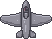
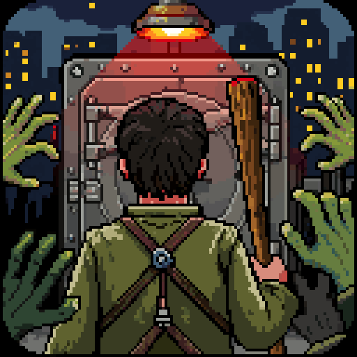
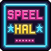
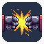

GALADIN
We make worlds.
Games for an older audience. 12+, 16+ and 18+ are our own age labels, not a PEGI or USK rating. Check the label on each game.

Jeager BETA
Your air base guards the sky: scramble, take off, send fighters out, and shoot down drones and jets on patrol. War theme, cartoon explosions, no people shown.

Saferoom ALPHA 16+
Side-scrolling zombie survival: fight your way from one safe room to the next, search the dead, and build better weapons at the workbench. Zombie violence and blood, pixel art. Heavy first load (about 38 MB).

Speelhal ALPHA 18+
An arcade with four cabinets on play money: a slot machine, a claw machine with plush monsters, a shooting gallery and a coin pusher. It simulates gambling; tokens and tickets are play money with no value and cannot be exchanged for anything real.
Kogelkast ALPHA 12+
Pixel-art pinball in the style of 1990s DOS tables: three tables with flippers, bumpers and bonuses: one inside a clockwork, one with an android pin-up on a neon-city table, and one with Mozart's music as chiptune. Suggestive but fully dressed art.

Servo Smash ALPHA 12+
A side-view robot fighting game: train your pilot, build and upgrade your robot with mechanics and research, and fight your way up through three weight classes. Cartoon robot violence, no blood and no people hit. Mods are local files on your own device only.

Owes Nothing ALPHA 16+
A space trading and bounty game on the lawless Helios Fringe: haul cargo, mine, fight, and work for factions. Far from finished and never played start to end; this web version has no voices (the PC version has them) and may crash on some phones. Grim tone, smuggling, alcohol and cigars; no blood or explicit content.
These games are not finished. Beta: nearly done, but there can still be mistakes. Alpha: still being built, a lot is missing. In both cases your progress can be lost with a new version.